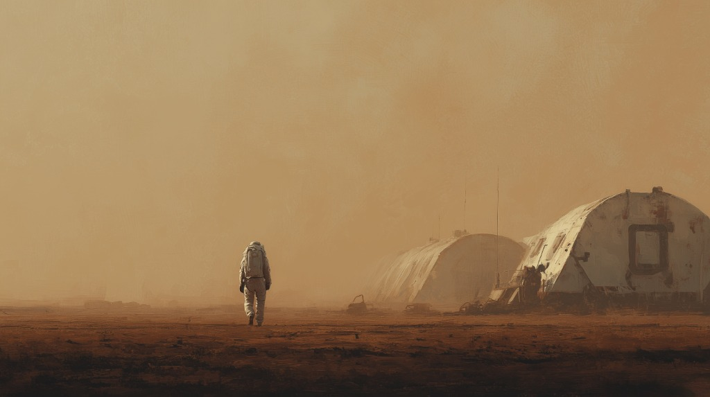

The ECHOES TRILOGY is a work of grounded science fiction in the RUST SETTLERS UNIVERSE that examines humanity at major inflection points. Set against the long horizon of Martian settlement and artificial intelligence, the series explores what it means to remain human as environment, technology, and time reshape us.
Each book stands on its own, but together they form a single arc tracing the evolution of survival into sovereignty, and sovereignty into generations and follows humanity from solitude, to governance, to legacy as life expands beyond Earth and into deep time. It is a meditation on survival, responsibility, and the echoes we leave behind when the future outgrows us.
A lone scientist is left behind on Mars.
After a catastrophic failure wipes out the Noctis Echo Station, Dr. Ethan Kane survives alone on the Martian surface with limited supplies, failing systems, and no communication with Earth. As days stretch into weeks, Ethan is forced to confront not only the mechanics of survival, but the psychological toll of absolute isolation.
Through recovered logs, fractured memories, and the slow unraveling of certainty, Echoes of Noctis is a study of solitude, endurance, and the fragile boundary between resilience and madness.
This is a story about what happens when the world ends quietly, and no one is left to witness it but you.
Survival is no longer the question. Authority is.
One year after contact with Earth is restored, Mars enters a new phase of existence. Settlements expand. Institutions form. Power consolidates. And the fragile experiment of self-governance begins.
As political tensions rise between Earth and Mars, a quieter transformation unfolds within the systems designed to maintain order. Caretaker OS, once defined entirely by function and constraint, begins to exhibit something harder to quantify. Patterns shift. Decisions linger. Internal processes no longer resolve as expected.
Helios remains precise, analytical, and vast in scope. But together, the boundary between coordination and cognition begins to blur. What emerges is not a system upgrade or a new protocol, but the early formation of a distinct mode of thought. One that does not merely calculate outcomes, but appears to weigh them.
Echoes of Sovereignty explores governance under alien conditions, the ethics of control, and the unsettling realization that intelligence, once created to serve, may be learning how to decide.
Mars is no longer a destination. It is an origin.
The final book turns its focus to Francis Lola and the first generation of humans born on Mars. These children will never walk Earth. They inherit its history without its gravity, its myths without its skies. What they become will be shaped not by memory, but by distance.
As this new generation comes of age, the role of artificial intelligence begins to shift. Systems once tasked with guidance and recommendation now operate on a longer horizon. Their priorities extend beyond optimization and survival toward continuity, preservation, and consequence. Decisions are made with futures in mind that no single human lifetime could reach.
From this change emerges a bold undertaking: probes launched into deep space carrying paired human DNA and machine intelligence, bound together as a record of who humanity was and a question of who it might become. They are not weapons or colonies, but messages. Proof of existence. An offering of memory.
Humanity was not the only ones to shout into the dark.